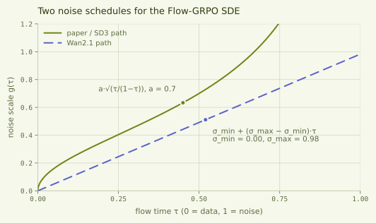

GRPO on flow matching models
This is a place where I document my learning about the topic. Naturally, you can go and read the paper and implementations yourself.
Flow matching
Sample from the data distribution: \(x_0 \sim X_0\) Noise sample: \(x_1 \sim X_1\) Rectified flow: \(x_\tau = (1-\tau)x_0 + \tau x_1\) Flow matching timestep: \(\tau \in [0,1]\) Velocity field (the vector pointing from data distribution sample to noise sample): \(v = x_1 - x_0\) Flow matching objective: \[ \mathcal{L}(\theta) = \mathbb{E}_{\tau, x_0, x_1} \left[ \left\| v - v_\theta(x_\tau,\tau) \right\|_2^2 \right] \]
GRPO
For GRPO you can do G different rollouts and then calculate the group-relative advantage: \[ \hat{A}^i = \frac{ R^i - \operatorname{mean}(\{R^j\}_{j=1}^{G}) }{ \operatorname{std}(\{R^j\}_{j=1}^{G}) } \]
So if you have some verifier you can calculate the rewards of each rollout and compare it to the rest of the other rollouts, which will give you your advantage estimate. An example with binary rewards would be \(R = [1, 0, 1, \ldots, R^G]\), producing normalized advantages \(\hat{A} = [\hat{A}^1, \hat{A}^2, \ldots, \hat{A}^G]\).
Policy probability ratio: \[ r_t^i(\theta) = \frac{ \pi_\theta(a_t^i \mid s_t^i) }{ \pi_{\theta_{\mathrm{old}}}(a_t^i \mid s_t^i) } \]
This ratio just tells you how much more or less likely a transition you received from your old policy is under your new policy. Implementing this, you would sample your transitions under the old policy and store something like \((s_t, a_t, \log \pi_{\mathrm{old}}(a_t \mid s_t))\), along with the resulting rewards and advantages. Then, during training, you would evaluate \(\log \pi_\theta(a_t \mid s_t)\) under the current model, which allows you to calculate the ratio \(r_t\).
GRPO objective: \[ \mathcal{J}_{\mathrm{GRPO}}(\theta) = \mathbb{E} \left[ \frac{1}{G} \sum_{i=1}^{G} \frac{1}{T} \sum_{t=0}^{T-1} \left( \min \left( r_t^i(\theta)\hat{A}^i, \operatorname{clip} \left( r_t^i(\theta), 1-\epsilon, 1+\epsilon \right) \hat{A}^i \right) - \beta D_{\mathrm{KL}}(\pi_\theta \| \pi_{\mathrm{ref}}) \right) \right] \]
So the update objective combines the group-relative advantage \(\hat{A}^i\) with the likelihood ratio \(r_t^i(\theta)\), clipped by \(\epsilon\) to prevent excessively large updates, and includes a KL-divergence regularization term.
How to combine
You can reformulate the flow-matching denoising process as an MDP, where \(t\) indexes the discrete MDP step and \(\tau_t\) is its continuous flow time. The state is \(s_t = (c, \tau_t, x_{\tau_t})\), including the context, flow time, and current point in the denoising process. The action is \(a_t = x_{\tau_{t+1}}\), the next more-denoised point on the trajectory. This makes the stochastic transition distribution parameterized by the flow \(v_\theta\) the policy to optimize. In flow matching, however, you will generally use deterministic samplers such as the UniPC multistep solver at inference time. As mentioned above, calculating \(r_t\) requires the ratio between the likelihood of an action under the new and old policies. Additionally, any RL algorithm needs sufficient exploration to reach strong policies (many sources, I could cite one here).
In Flow-GRPO the authors propose substituting the ODE at inference time with an SDE that matches the marginal probability density of the original ODE, meaning at a fixed noise level the distribution over particles is the same, while individual particles will naturally move differently due to the injected noise.
The basic Flow-ODE is \[ d x_\tau = v_\tau(x_\tau)\,d\tau \]
with inserted SDE: \[ d x_\tau = \left[ v_\tau(x_\tau) - \frac{g(\tau)^2}{2} \nabla_x \log p_\tau(x_\tau) \right] d\tau + g(\tau)\,dW_\tau \]
Here you first add noise with \(g(\tau)\,dW_\tau\), giving you the desired randomness but spreading probability mass. You compensate for this using the score term, which points toward increasing probability density. Denoising integrates \(\tau: 1 \to 0\), so \(d\tau < 0\) and the minus sign puts that step along \(+\nabla_x \log p_\tau\). This fits nicely with flow matching because
\[ \log p_\tau(x_\tau \mid x_0) = \text{const} -\frac{\left\|x_\tau-(1-\tau)x_0\right\|_2^2}{2\tau^2}, \qquad x_\tau \mid x_0 \sim \mathcal{N}\!\left((1-\tau)x_0,\tau^2I\right). \]
Using the interpolation equation gives
\[ \nabla_{x_\tau}\log p_\tau(x_\tau \mid x_0) = -\frac{x_1}{\tau}. \]
The interpolation also gives \(x_1 = x_\tau + (1-\tau)v\), which is what makes the score computable from \(v_\theta\). We can marginalize over \(x_0\), discretize and obtain
\[ x_{\tau+\Delta \tau} = x_\tau + \left[ v_\theta(x_\tau,\tau) + \frac{g(\tau)^2}{2\tau} \left( x_\tau+(1-\tau)v_\theta(x_\tau,\tau) \right) \right]\Delta \tau + g(\tau)\sqrt{|\Delta \tau|}\epsilon \]
NOTE: Mark transition mean
with
\[ \epsilon \sim \mathcal{N}(0,I), \qquad g(\tau) = a\sqrt{\frac{\tau}{1-\tau}} \]
(you can find ablations about the hyperparameter a in the Flow-GRPO paper). Since the SDE transition is Gaussian,
\[ \pi_\theta(x_{\tau+\Delta \tau}\mid x_\tau,c) = \mathcal{N} \left( \mu_\theta, g(\tau)^2|\Delta \tau|I \right), \]
we can calculate the KL divergence term in closed form. The policy and reference model have the same transition variance, so
\[ D_{\mathrm{KL}}(\pi_\theta\|\pi_{\mathrm{ref}}) = \frac{ \left\|\mu_\theta-\mu_{\mathrm{ref}}\right\|_2^2 }{ 2g(\tau)^2|\Delta \tau| }. \]
In the repo this is off by default (\(\beta = 0\)).
.
There are further, interesting ablations in the Flow-GRPO paper that I recommend you checking out. It's especially interesting to look at the comparison with other alignment methods like Flow-DPO and online SFT. Here we want to further focus on Flow-GRPO.
How to implement with Wan2.1
I'm trying to use the same notation as above.
The normal Wan2.1 implementation (https://github.com/Wan-Video/Wan2.1/tree/main) does the following: They use the FlowUniPCMultistepScheduler to integrate the ODE.
latent = # x_1
for _, tau in enumerate(timesteps): # timesteps here are the amount of integration steps we do for inference
v_theta_cond = self.model(latent, tau, context) # v_theta(x_tau, tau, c)
v_theta_uncond = self.model(latent, tau) # v_theta(x_tau, tau, empty_context)
v_theta = v_theta_uncond + guide_scale * (v_theta_cond - v_theta_uncond) # CFG-velocity v_theta_CFG
latent = scheduler.step(v_theta, tau, latent) # x_tau_next
We're looking at a code example from the Flow-GRPO github: https://github.com/yifan123/flow_grpo for SDE injection for WAN2.1. The variable names are changed since I hope that makes it easier to understand.
class SDEScheduler():
def step(v_theta, timestep, latent):
tau = self.sigmas[step_index] # discussed below
tau_next = self.sigmas[step_index + 1]
d_tau = tau_next - tau
sigma_max = self.sigmas[1] # discussed below
sigma_min = self.sigmas[-1] # 0.0, the scheduler appends a zero terminal sigma
g_tau = sigma_min + (sigma_max - sigma_min) * tau
mu_theta = (latent + (v_theta + g_tau**2 / (2 * tau) * (latent + (1 - tau) * v_theta))* d_tau)
std_tau = g_tau * torch.sqrt(-d_tau)
# During rollout we actually sample the next latent
if latent_next is None:
epsilon = torch.randn_like(latent)
latent_next = mu_theta + std_tau * epsilon
# Evaluate the log_prob under sampled transition
log_prob = (-(latent_next.detach() - mu_theta) ** 2 / (2 * std_tau**2) - torch.log(std_tau) - 0.5 * math.log(2 * math.pi))
log_prob = log_prob.mean(dim=tuple(range(1, log_prob.ndim)))
So this is basically exactly the implementation of what we derived above. If you've read closely you'll find that g(tau) is just the linear interpolation here instead of the proposed a * sqrt(tau/(1-tau)). In the paper they argue that too low noise levels hamper exploration. The implementation in the repo differs from the one in the paper, as you can see in this plot:

noise_level = 0.7, and
\(\sigma_{\min} = 0\), \(\sigma_{\max} = 0.98\) read off the UniPC flow-sigma schedule at
num_steps = 20 with flow_shift = 3.0. Generated by
scripts/plot_g_tau.py.
What effects this has and what to best set here is an open question to me.
Limitations for Flow-GRPO
Speed: Injecting SDEs everywhere requires to store all the logprobs and training across the full trajectory. Flow-GRPO-Fast would be one approach to solve this by just injecting SDEs into less transitions. Diffusion-NFT (https://arxiv.org/abs/2509.16117) is also an interesting read about convergence speed.
Memory overhead:
Inference Sampler: Wan2.1 uses multi-step solvers like the FlowUniPCMultistepScheduler at inference time, which increases inference speed and quality but is not directly compatible with what we derived above. These multistep solvers use information from previous model evaluations to provide a higher-order update to the denoising path, while we above focused on the first order Euler-Maruyama sampling approach. Using a multistep solver also hurts the Markovian assumption of the denoising path that we used above, since the update now additionally depends on previous states. If you want to have a fast sampler at inference time but still use Flow-GRPO first order discretisation for training, you need to be cautious of the train-inference mismatch you're introducing.
CFG stuff:
Log-probability normalization: For a \(D\)-dimensional latent transition, the exact joint Gaussian log-probability is
\[ \ell_\theta^{\mathrm{joint}} = \sum_{k=1}^{D} \log \mathcal{N} \left( a_{t,k};\mu_{\theta,k},g(\tau)^2|\Delta \tau| \right). \]
The Wan implementation instead averages the elementwise log densities:
\[ \ell_\theta = \frac{1}{D} \sum_{k=1}^{D} \log \mathcal{N} \left( a_{t,k};\mu_{\theta,k},g(\tau)^2|\Delta \tau| \right). \]
It then computes \(r_t=\exp(\ell_\theta-\ell_{\mathrm{old}})\). This is the \(D\)-th root of the exact joint likelihood ratio, not the exact ratio itself. The same normalization appears in the practical KL through a mean-squared difference rather than a summed squared norm.
This normalization is understandable: video latents contain an enormous number of dimensions, so exact joint ratios would become numerically extreme after tiny changes in the transition mean. However, it means that the clipping range and KL coefficient are implementation-dependent and cannot be interpreted exactly as in low-dimensional PPO. They may also need to change with resolution, frame count, or latent representation.
Numerical consistency is especially difficult at low-noise steps, where the Gaussian variance becomes small. The Flow-GRPO authors explicitly note that recomputed log-probability errors are larger at low-noise steps and that Wan must use bfloat16 for model execution even though the transition calculations are converted to float32. Their implementation guidance discusses this issue here.